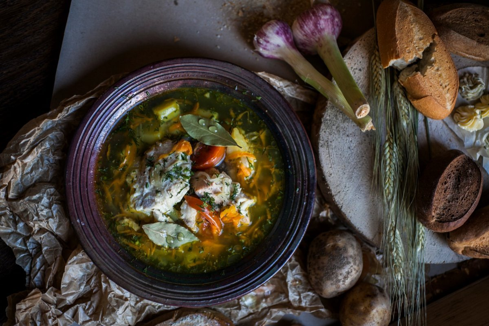
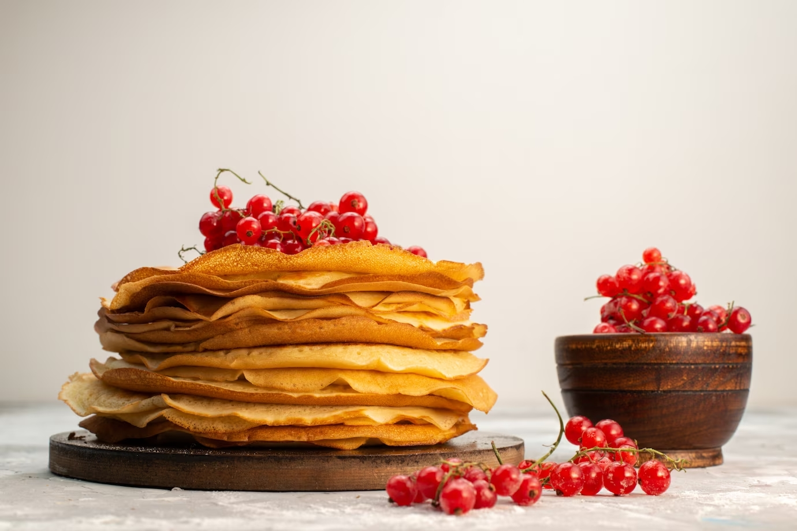
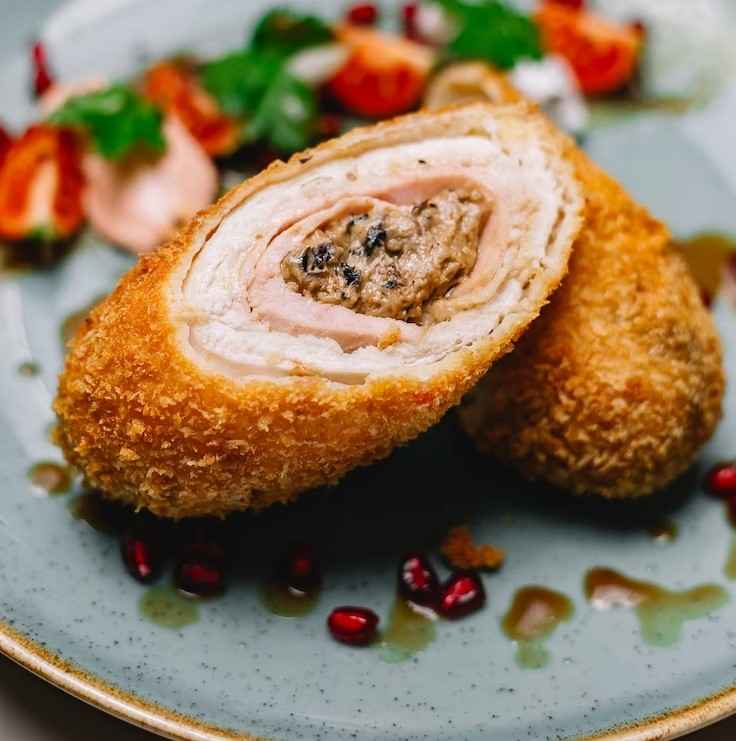

Уха
- 1 кг свежей рыбы (лучше всего щуки)
- 3 литра воды
- 3 картофелины
- 2 луковицы
- 1 морковь
- 1/2 стакана риса
- Соль и перец по вкусу
- Зелень (укроп, петрушка)
- Рыбу очистите, удалите внутренности и нарежьте крупными кусками.
- Картофель, лук и морковь нарежьте кубиками.
- В кастрюлю налейте воду, добавьте картофель, лук и морковь, доведите до кипения и варите 10 минут.
- Добавьте рыбу, рис, соль и перец по вкусу. Доведите до кипения и варите еще 20 минут.
- Последние 5 минут добавьте зелень.
Калорийность: 90 ккал на 100 г
Питательная ценность: Белки - 9 г, жиры - 2 г, углеводы - 7 г.

Блины
- 2 стакана муки
- 2 стакана молока
- 2 яйца
- 1/4 стакана сахара
- 1/2 чайной ложки соли
- 2 столовые ложки растительного масла
- Смешайте муку с сахаром и солью в большой миске.
- Постепенно добавляйте молоко и перемешивайте до получения гладкого теста без комочков.
- Добавьте растительное масло и взбейте тесто еще раз, чтобы все ингредиенты хорошо соединились.
- Оставьте тесто на 10-15 минут, чтобы оно отдохнуло и насытилось кислородом.
- Смажьте сковороду небольшим количеством масла и разогрейте ее на среднем огне.
- Наливайте тесто на сковороду мерным ковшом или черпаком и распределяйте его по всей поверхности сковороды.
- Жарьте блины с одной стороны до золотистого цвета, затем переверните и жарьте с другой стороны.
- Готовые блины выкладывайте на тарелку и покрывайте кухонной бумагой или полотенцем, чтобы они сохраняли тепло.
- Повторяйте процесс, пока не испечете все блины.
- Подавайте блины с любимой начинкой и наслаждайтесь их вкусом!

Курица по-киевски
- 4 куринных грудки без костей
- 150 гр масла
- 1/2 лимона (сок)
- 1 яйцо
- 1 ст. л. майонеза
- соль и перец по вкусу
- Разрежьте грудки на 2 половинки, сделайте из них отбивные.
- Смешайте масло с лимонным соком, яйцом, майонезом, солью и перцем.
- Сформируйте из смеси сливочное масло, завернув его в пищевую плёнку.
- Положите по кусочку масла в центр каждой отбивной, заверните её в рулет и зашейте ниткой или приколоть деревянной шпажкой.
- Обжарьте рулетики на сковороде до золотистой корочки с двух сторон.
Калорийность: 250 ккал
Белки: 30 г
Жиры: 15 г
Углеводы: 2 г